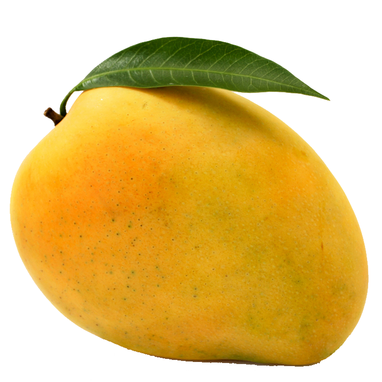
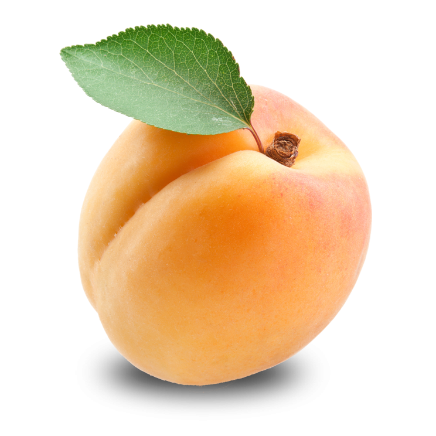

The garden strawberry (or simply strawberry; Fragaria ananassa)is a
widely grown hybrid species of the genus Fragaria, collectively known as
the strawberries, which are cultivated worldwide for their fruit. The
fruit is widely appreciated for its characteristic aroma, bright red
color, juicy texture, and sweetness. It is consumed in large quantities,
either fresh or in such prepared foods as jam, juice, pies, ice cream,
milkshakes, and chocolates. Artificial strawberry flavorings and aromas
are also widely used in products such as candy, soap, lip gloss,
perfume, and many others.

Mango
A mango is an edible stone fruit produced by the tropical tree Mangifera
indica. It is believed to have originated in southern Asia, particularly
in eastern India, Bangladesh, and the Andaman Islands.M. indica has
been cultivated in South and Southeast Asia since ancient times
resulting in two types of modern mango cultivars: the "Indian type" and
the "Southeast Asian type". Other species in the genus Mangifera
also produce edible fruits that are also called "mangoes", the majority
of which are found in the Malesian ecoregion.A mango is an edible stone fruit produced by the tropical tree.
Guava
Guava is a tree that grows in Central and South America. The fruit is
commonly eaten fresh or made into beverages, jams, and other foods.
Various parts of the plant, including the leaf and the fruit, are used
as medicine. People use guava leaf for stomach and intestinal
conditions, pain, diabetes, and wound healing.Guava was adopted as a
crop in subtropical and tropical Asia, parts of the United States (from
Tennessee and North Carolina, southward, as well as the west and
Hawaii), tropical Africa, and Oceania. Guavas were introduced to
Florida.
Cherry
A cherry is the fruit of many plants of the genus Prunus, and is a
fleshy drupe (stone fruit). Commercial cherries are obtained from
cultivars of several species, such as the sweet Prunus avium and the
sour Prunus cerasus. The name 'cherry' also refers to the cherry tree
and its wood, and is sometimes applied to almonds and visually similar
flowering trees in the genus Prunus, as in "ornamental cherry" or
"cherry blossom". Wild cherry may refer to any of the cherry species
growing outside cultivation, although Prunus avium is often referred to
specifically by the name "wild cherry" in the British Isles.

Apricot
Apricots (Prunus armeniaca) are stone fruits also known as Armenian
plums. Round and yellow, they look like a smaller version of a peach but
share the tartness of purple plums. They're extremely nutritious and
have many health benefits, such as improved digestion and eye health.
Japanese apricot P. mume is another widely cultivated apricot species,
usually for ornamental uses. Despite the common name, it originated from
China, and was introduced to Japan in ancient times.Hybridisors have
created what is known as a "black apricot" or "purple apricot", (Prunus
dasycarpa)